かくれんぼいろいろ [梅吉]
リビングの入り口でよく目にする光景。
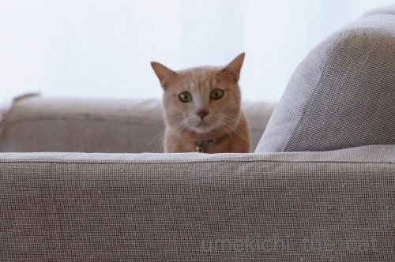
こちらの様子をうかがってます。

さらに近づくと身を低くして隠れてみる。
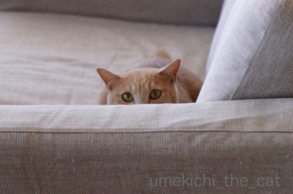
下僕も身を低くして息を殺していると心配になるのか覗いてきます(*>艸<)
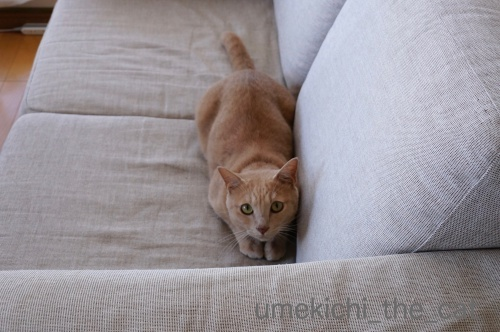
![[猫]](https://blog.ss-blog.jp/_images_e/101.gif) あ〜 わし みつかってしもた〜
あ〜 わし みつかってしもた〜
見つけて欲しいくせにwww
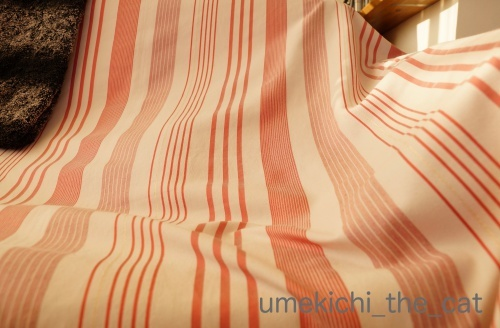
ソファーのマルチカバーの下、不自然な膨らみが！！
かくれんぼですかー0(≧▽≦)0

ちらりとめくると
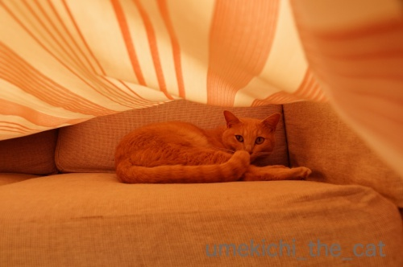
めっちゃ迷惑そうでした(-_-メ)
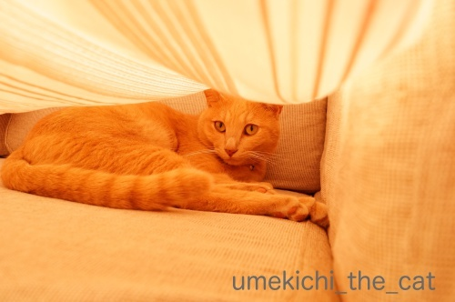
のぞかんといてや
はいはい、ごめんなさいね。
喜ぶときもあるのに・・・
最後はクイズです！
梅吉はどこ？一緒に探してください！！
（15秒です＾＾）
わかりましたか？ ( ´艸｀)
 ↑ガブッと一押し↑
↑ガブッと一押し↑
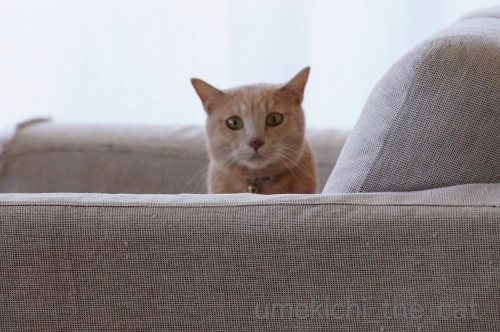
こちらの様子をうかがってます。

さらに近づくと身を低くして隠れてみる。
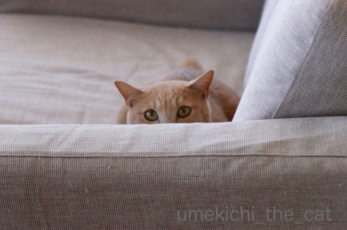
下僕も身を低くして息を殺していると心配になるのか覗いてきます(*>艸<)
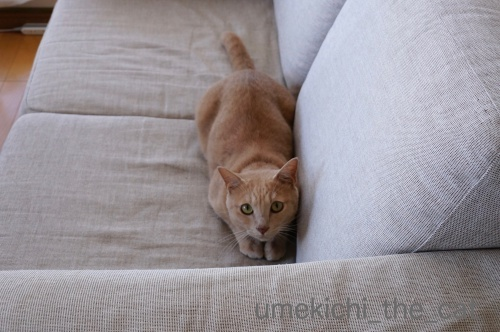
見つけて欲しいくせにwww
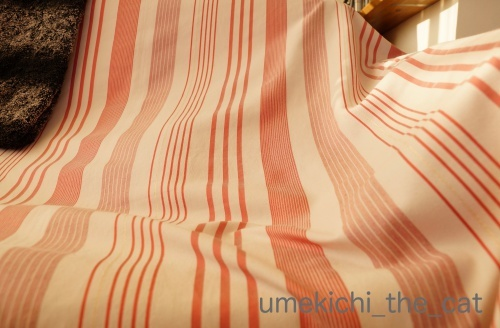
ソファーのマルチカバーの下、不自然な膨らみが！！
かくれんぼですかー0(≧▽≦)0

ちらりとめくると
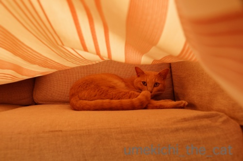
めっちゃ迷惑そうでした(-_-メ)
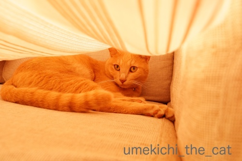
はいはい、ごめんなさいね。
喜ぶときもあるのに・・・
最後はクイズです！
梅吉はどこ？一緒に探してください！！
（15秒です＾＾）
わかりましたか？ ( ´艸｀)
今年最後の病院とワクチン接種 [梅吉]
週末は梅吉の受診日でした。
ちょっと解説しますと梅吉は「高脂血症」で毎日薬を服用しております。
体重や年齢から見て生活習慣によるものではなく
脂肪をうまく代謝できない体質のようです。
経緯など興味のある方はタグの「病院」で関連記事が出てきます。
よろしければご覧ください＾＾
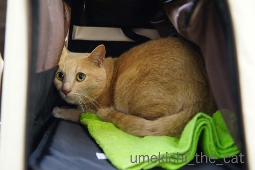
病院の待合室にて。キャリーの隅でちんまりしてます。
ちんまりしているだけで怖がったりしている様子はありません。
待合室を大きな犬が横切っても余裕です。度胸はあるんですよねw
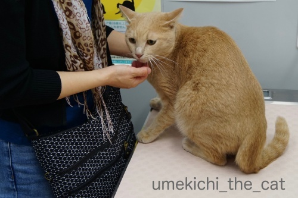
診察台に乗せられると「わし かえるー！」とキャリーに戻ろうとしますよ（^_^;)
ちなみにこの日の体重は4850g。
ちょっと増加気味ですが朝のトイレ大小をしていないせいもあるかな。
それに夏場の体重増加は梅吉の先生によると自然なことなんだとか。
（結果オーライの性格なので「なぜ？」かは聞いたけど忘れちゃいましたw）
私自身が己の体重を考えてちょっとホッとしたかもwww
PCの前で同じくホッとしているあなた！仲間！仲間ー！！(*>艸<)
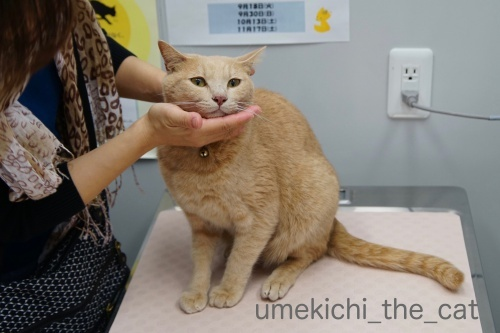
今日はちっくんを二回しなきゃいけないからがんばろうね！
なでなで・・・・・
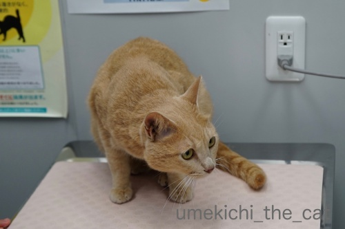
先生が診察室に入ってくると後ずさる。
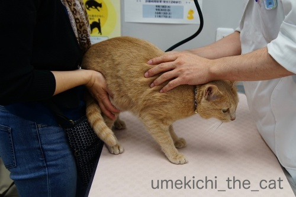
顔の向きが反対向いちゃったので写真は取れなかったのですが
この日は先生に「シャーーーーーッ！」
マイルドになるのも良いけどそのくらい勢いがあった方が梅吉らしくて良いと思いますよ＾＾
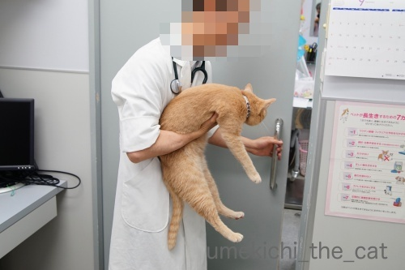
触診の結果も良好で採血に向かう梅吉。
「うーわー」鳴いて怒ってますが暴れたり噛みついたりはしないんです。
やっぱり肝が座っているのかな。
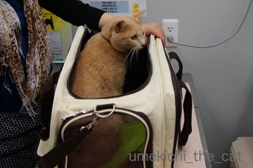
採血後戻ってくるとさっさとキャリーに入ります (⌒_⌒;
血液検査の結果、中性脂肪の値がもう少し数値が下がっていて欲しいところでしたが
上がってはいないのでまずまず良好。
体重増加の件も中性脂肪値が上がっていないということは
脂肪ではなく筋肉が増えているということなので良い傾向とのことでした。
（私はちょっと耳が痛いかもw）
この後ワクチンをちっくんして今年の診察は終了しました。
次回の診察予約をしたのですが、来年一月。
もう来年の話が出るようになってきましたねー。一年が早いです。
ワクチンをしたこともありこの日はどこへも行かずに梅吉の様子を観察。
ワクチン接種後だるそうにしていたのは初めてワクチンの時のみ。
去年は普段とまったく変わりなく過ごしたのですが今年は・・・・・
（16秒です）
おとーさんのなぞの呼びかけに大リアクションです！（今回はおっとの声が入ってませんが）
なんだろう、このハイテンションは・・・
昼寝もあまりせずうろうろしたり落ち着きなくいつもよりも甘えっ子でした。
夜にはすっかり落ち着いて何も問題はなかったのでご安心くださいね＾＾
お留守番頑張りました [梅吉]
やっぱり足にがぶがぶ・・・
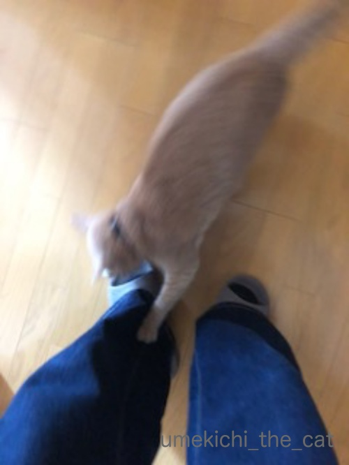
梅吉さんにはお留守番をお願いして岐阜に行って来ました。
いつもとは違うスタッフの方がシッターに来てくれましたが
やっぱり足がぶがぶはお約束のようです(⌒_⌒;
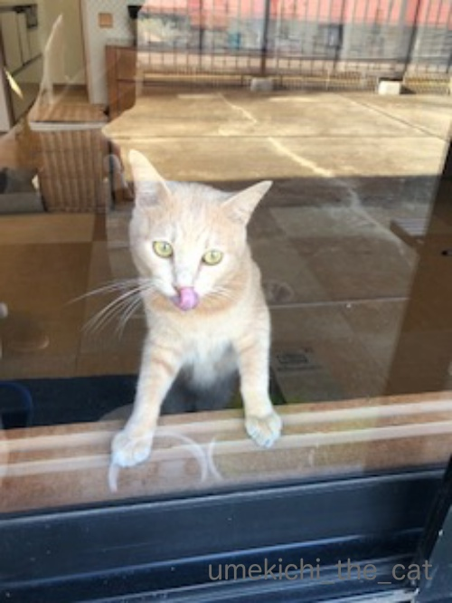
ベランダに出たシッターさんを追いかけるのを見ると嫌がってはいない様子。
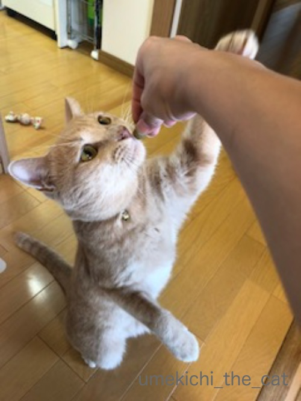
手からおやつをもらっているしw
明日は旅行記をアップしますね。
興味がありましたら読んでくださいませm(_ _)m
前記事のお返事はこれから書かせてくださいねー。
みなさまの所へもこれから遊びに伺いますのでよろしくお願いします！
タグ：お留守番
2018-10-09 07:47
nice!(44)
追い詰められてぐねんぐねんと謎の呼びかけ [梅吉]
イニャバウワーの後おやつを待ちきれなくてぐねんぐねんと床でのたうつ梅吉さん。
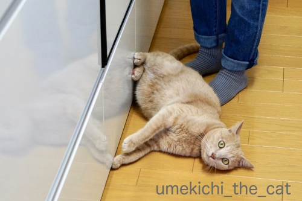
モタモタしているとがぶがぶしてくるので要注意です。
ストッキング履いているともっと大変。
この うすいかわは なんやー
とストッキングを引っ張ろうとします(⌒_⌒;
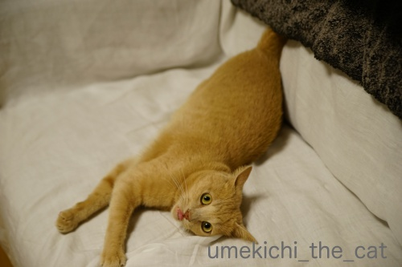
こちらは遊んで欲しくて一人で盛り上がっているところ。
ソファの上を寝ながらぐねんぐねんと移動して側にいる下僕に飛びついてきます。
でもいちばんぐねんぐねんするのは・・・・・
（14秒です。おっとの声付きw）
大好きな場所で「⌘◆◯※ぃぃぃ〜！！」と呼びかけられ
喜びをどう表現してよいのかわかわらなくてぐねんぐねんしてますwww
興奮すると高いところに登りたくなる梅吉さん。
網戸の窓枠、リビングのドアに垂直に駆け上がろうとします。
一番好んで上がるのは洗面ドレッサーの上。頂点平らだし。
動画は追い詰められているわけではありませんよ＾＾
ここへは垂直ではありませんがすごい跳躍で上がります。
で、涼しくなってから夜の追いかけっこが日課のおっとと梅吉。
（階下の方への配慮はちゃんとしております）
おっとが二度ほど言っている謎のよびかけ「⌘◆◯※ぃぃぃ〜」( ´艸｀)
「梅吉」が変化しまくってこうなりました。
聞き取れないでしょ？なんて言っているのかはナイショでーすw
ちなみに「ぃぃぃ〜」が付くバージョンは遊びの時だけです。
我が家では「梅吉」と呼んだことはほぼないです。
呼ぶ時は「うめ」「おにいちゃん」か、この謎の「⌘◆◯※」（爆）
本ニャンはどれで呼んでもちゃんと自分のことだと理解していますよ＾＾
みなさんは名付けた正しい名前で呼んでいますか？
↑ガブッと一押し↑
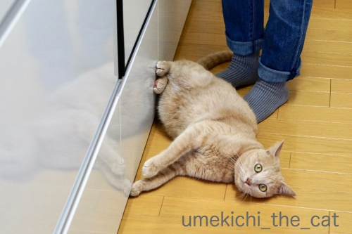
モタモタしているとがぶがぶしてくるので要注意です。
ストッキング履いているともっと大変。
とストッキングを引っ張ろうとします(⌒_⌒;
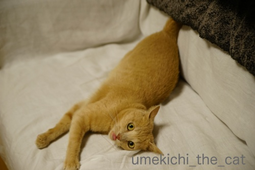
こちらは遊んで欲しくて一人で盛り上がっているところ。
ソファの上を寝ながらぐねんぐねんと移動して側にいる下僕に飛びついてきます。
でもいちばんぐねんぐねんするのは・・・・・
（14秒です。おっとの声付きw）
大好きな場所で「⌘◆◯※ぃぃぃ〜！！」と呼びかけられ
喜びをどう表現してよいのかわかわらなくてぐねんぐねんしてますwww
興奮すると高いところに登りたくなる梅吉さん。
網戸の窓枠、リビングのドアに垂直に駆け上がろうとします。
一番好んで上がるのは洗面ドレッサーの上。頂点平らだし。
動画は追い詰められているわけではありませんよ＾＾
ここへは垂直ではありませんがすごい跳躍で上がります。
で、涼しくなってから夜の追いかけっこが日課のおっとと梅吉。
（階下の方への配慮はちゃんとしております）
おっとが二度ほど言っている謎のよびかけ「⌘◆◯※ぃぃぃ〜」( ´艸｀)
「梅吉」が変化しまくってこうなりました。
聞き取れないでしょ？なんて言っているのかはナイショでーすw
ちなみに「ぃぃぃ〜」が付くバージョンは遊びの時だけです。
我が家では「梅吉」と呼んだことはほぼないです。
呼ぶ時は「うめ」「おにいちゃん」か、この謎の「⌘◆◯※」（爆）
本ニャンはどれで呼んでもちゃんと自分のことだと理解していますよ＾＾
みなさんは名付けた正しい名前で呼んでいますか？
お膝猫が観測されております＾＾ [梅吉]
9月30日。午後３時ごろから雨がポツポツ降り始め
夕方５時を回る頃には窓に叩きつけるように強く降り出しました。
夜の８時半、和歌山県田辺市付近に台風24号が上陸したとニュースが流れた頃から
我が家付近も更に風雨が強まりました。が、21号ような恐怖は感じませんでした。
ただいま夜の10時を少し過ぎています。
雨風は強いですがピークは過ぎた感じ。今夜は早めに休もうと思っています。
以下の記事は予約投稿になります＾＾
〜追記〜
昨夜は真夜中過ぎまで風が強かったです。
今朝も台風の名残の風が吹いているようですが雨はすっかり上がりました。
我が家はベランダのゴミ箱が倒れたくらいで被害はありませんでした。
今回は関東で倒木などの被害が出ているようですね。
皆様のところは大丈夫でしょうか。
･゜ﾟ･*:.｡..｡.:*･゜ﾟ･*:.｡. .｡.:*･゜ﾟ･*･゜ﾟ･*:.｡..｡.:*･゜ﾟ･*:.｡..｡.:*･゜ﾟ･*
雨がちで思うように窓を開けられないこともあり家の中はムシッと暑い日も多いこの頃です。
人間は半袖で過ごしていますがどうやらにゃんこは体感温度が違う様でして・・・
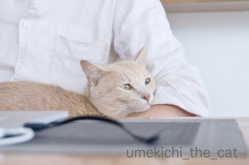
最近すっかりお膝猫なんですよ。
おとーさんのお膝に乗ってうっとりしてますw
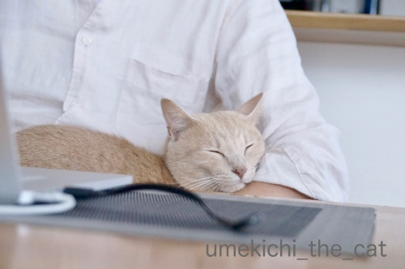
ぬくいですかー！！
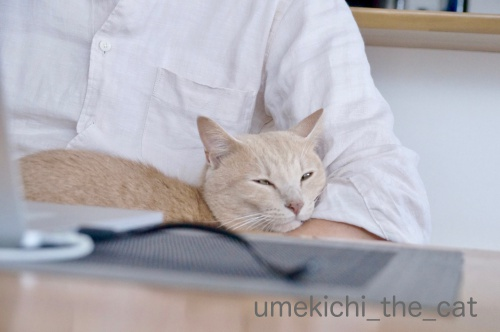
ちろり
夜も足の間or脇の下に挟まって密着して寝るようになってきました。
身動きが取れない。
最近寝違えたのはそのせいかしら・・・・・
にゃんこのまつ毛問題（笑）梅吉の横顔を撮ってみました。
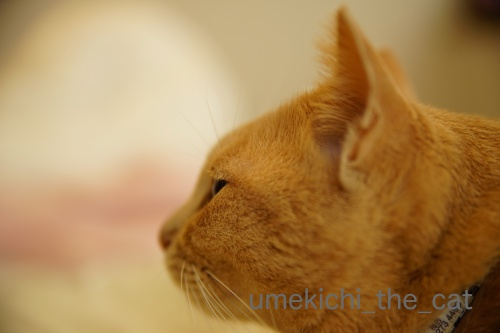
（おっと撮影）
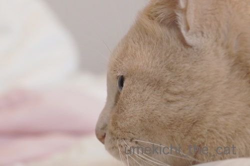
（おかーさん撮影）
判りにくいかな？
思い切りトリミングします。
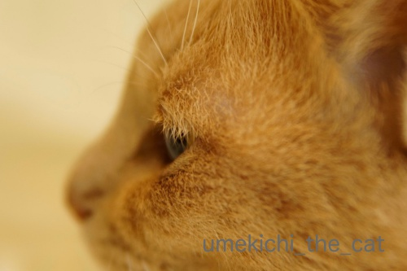
（おっと撮影）
被毛が下がっているようにも見えますがまつ毛ですよね！？
改めて見るとそんなに長くは無いけど（あおくんと比べると特にw）密に生えてる感じ？
長いのも密なのも羨ましいです・・・
最近私のカメラがやけにハイキーに写るなぁと思っていたら
撮影モードがエフェクト入りになっていた様子w
なおしてもらいました(^_^;)
↑ガブッと一押し↑
夕方５時を回る頃には窓に叩きつけるように強く降り出しました。
夜の８時半、和歌山県田辺市付近に台風24号が上陸したとニュースが流れた頃から
我が家付近も更に風雨が強まりました。が、21号ような恐怖は感じませんでした。
ただいま夜の10時を少し過ぎています。
雨風は強いですがピークは過ぎた感じ。今夜は早めに休もうと思っています。
以下の記事は予約投稿になります＾＾
〜追記〜
昨夜は真夜中過ぎまで風が強かったです。
今朝も台風の名残の風が吹いているようですが雨はすっかり上がりました。
我が家はベランダのゴミ箱が倒れたくらいで被害はありませんでした。
今回は関東で倒木などの被害が出ているようですね。
皆様のところは大丈夫でしょうか。
･゜ﾟ･*:.｡..｡.:*･゜ﾟ･*:.｡. .｡.:*･゜ﾟ･*･゜ﾟ･*:.｡..｡.:*･゜ﾟ･*:.｡..｡.:*･゜ﾟ･*
雨がちで思うように窓を開けられないこともあり家の中はムシッと暑い日も多いこの頃です。
人間は半袖で過ごしていますがどうやらにゃんこは体感温度が違う様でして・・・
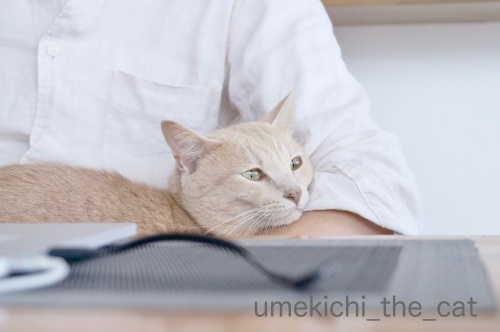
最近すっかりお膝猫なんですよ。
おとーさんのお膝に乗ってうっとりしてますw
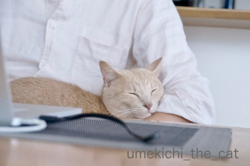
ぬくいですかー！！
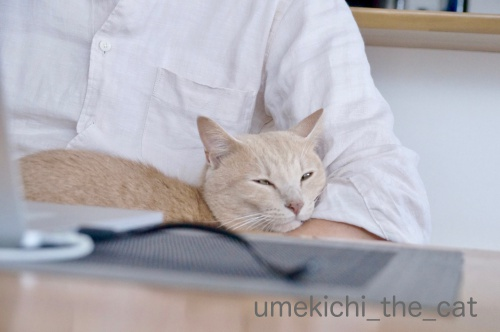
夜も足の間or脇の下に挟まって密着して寝るようになってきました。
身動きが取れない。
最近寝違えたのはそのせいかしら・・・・・
にゃんこのまつ毛問題（笑）梅吉の横顔を撮ってみました。
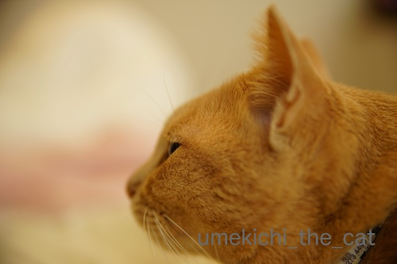
（おっと撮影）
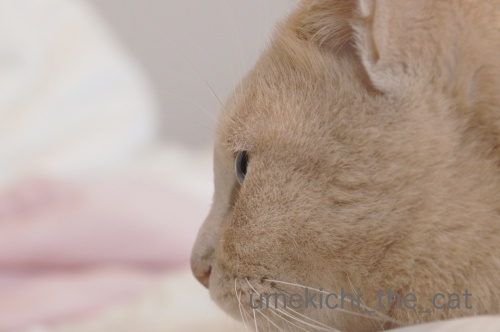
（おかーさん撮影）
判りにくいかな？
思い切りトリミングします。
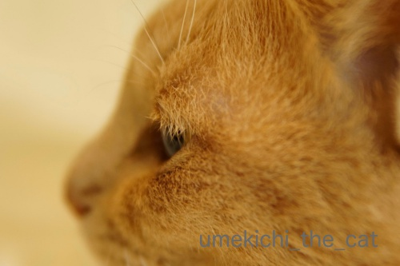
（おっと撮影）
被毛が下がっているようにも見えますがまつ毛ですよね！？
改めて見るとそんなに長くは無いけど（あおくんと比べると特にw）密に生えてる感じ？
長いのも密なのも羨ましいです・・・
最近私のカメラがやけにハイキーに写るなぁと思っていたら
撮影モードがエフェクト入りになっていた様子w
なおしてもらいました(^_^;)
寅さんシリーズをもう一度 [梅吉]
日中はそれなりに気温も上がりますが朝晩はめっきり涼しくなって・・・
先日は半袖＆七部丈ズボンとガーゼケット一枚で寝ていたら寒くて目が覚めちゃいました。
翌日上掛けを少し厚手のものに変えました。
窓から差し込む日差しもやわらかくなって来ましたね＾＾
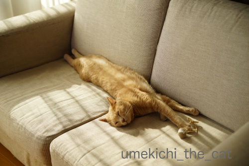
やわらかな日差しの中気持ちよさそうに眠る梅吉さん＾＾
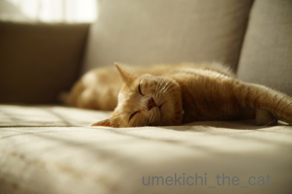
けだるい午後３時って感じにみえますが午前９時ごろです (⌒_⌒;
朝寝が許されるのはにゃんこの特権でしょうか。
☆ ☆ ☆ ☆ ☆ ☆ ☆
麦わら帽子が完璧季節外れになってしまう前に
ゆきちさん命名「寅さんシリーズ」の撮影会をしましたよ＾＾
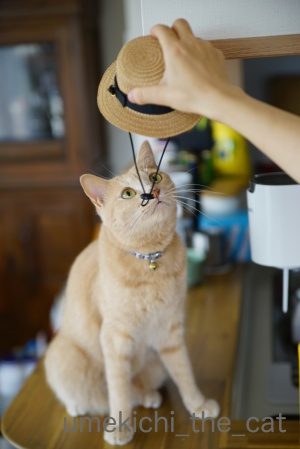
梅吉さんのこのお帽子姿、なかなか好評をいただいているのですよ。
さぁさぁ！！期待に応えましょうよー。
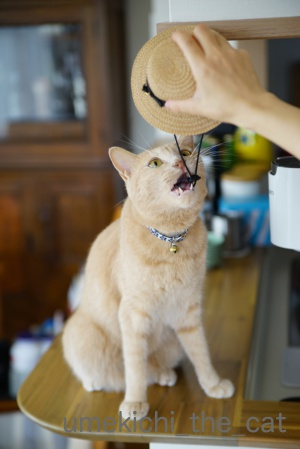
だめだw
モデルさんじゃれつきたい気分みたいです。
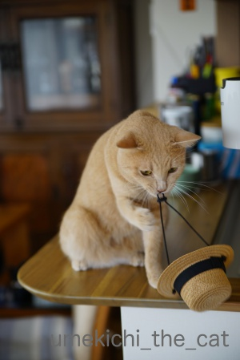
ぶ〜んと振り回して
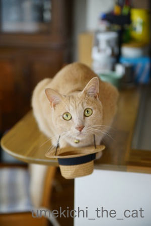
こんなんなっちゃいましたw
そこにおひねりでも入れてもらいましょうか( ´艸｀)
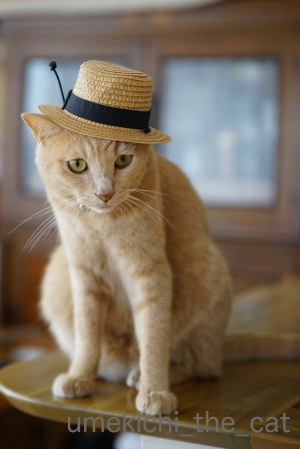
なんとか撮れた一枚がこちら。
帽子から飛び出ているゴムは見なかったことにしてください・・・・・
↑ガブッと一押し↑
先日は半袖＆七部丈ズボンとガーゼケット一枚で寝ていたら寒くて目が覚めちゃいました。
翌日上掛けを少し厚手のものに変えました。
窓から差し込む日差しもやわらかくなって来ましたね＾＾
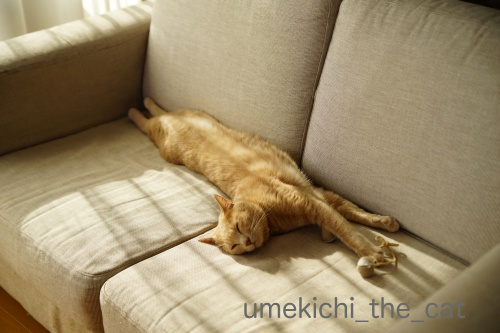
やわらかな日差しの中気持ちよさそうに眠る梅吉さん＾＾
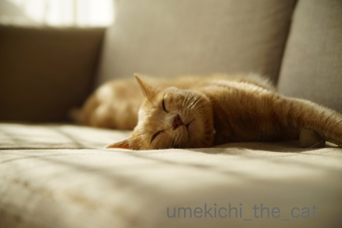
けだるい午後３時って感じにみえますが午前９時ごろです (⌒_⌒;
朝寝が許されるのはにゃんこの特権でしょうか。
☆ ☆ ☆ ☆ ☆ ☆ ☆
麦わら帽子が完璧季節外れになってしまう前に
ゆきちさん命名「寅さんシリーズ」の撮影会をしましたよ＾＾
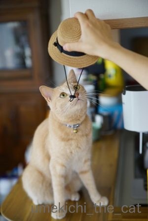
梅吉さんのこのお帽子姿、なかなか好評をいただいているのですよ。
さぁさぁ！！期待に応えましょうよー。
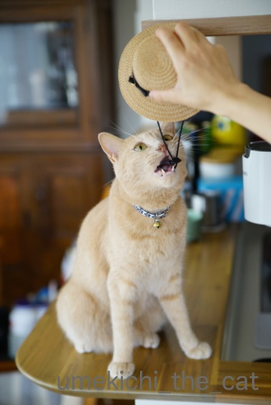
だめだw
モデルさんじゃれつきたい気分みたいです。
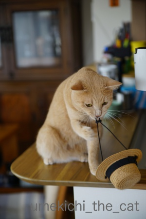
ぶ〜んと振り回して
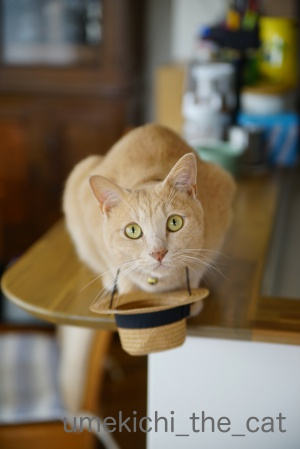
こんなんなっちゃいましたw
そこにおひねりでも入れてもらいましょうか( ´艸｀)
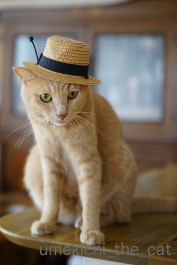
なんとか撮れた一枚がこちら。
帽子から飛び出ているゴムは見なかったことにしてください・・・・・
梅吉は爪のお手入れがお好き [梅吉]
かつてはネイルサロンでジェルネイルなどしていた時期もありましたが
私が不器用なのか家事がしにくい（ラップ類が張り付く、細かいものが摘めない等）事と
何より梅吉に怪我をさせては大変なので今は自爪、ケアは自分でしております。
（ネイルしていても動物には全く危険はないよ！という方ももちろんいらっしゃるかと＾＾
これはあくまで私個人の判断です。梅吉、やんちゃだしね・・・）
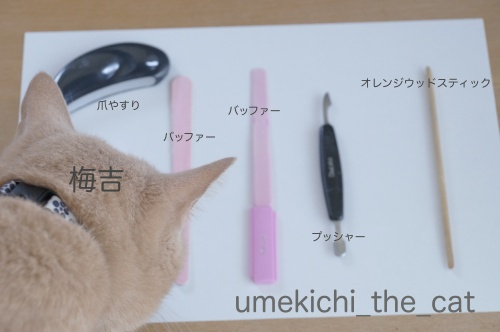
色々お道具を使ってケアしますが（これはなんじゃ？という男性は身近な女性に聞いてくださいね）
このケア道具、梅吉の大好物でもあります。
撮影していたら眠ってたのに飛び起きてやって来ました！
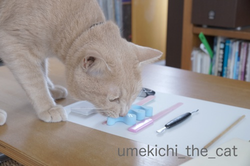
ケア用品の中でも一番執着しているのはこの青いスポンジ状のもの。
ペディキュアするときに足の指を離すために使うのですがこれが好きで好きで・・・
お気付きの方もいらっしゃるかと思いますがもう一山ないと全部の指が離れません。
足りない山はそう！梅吉に噛みちぎられましたw
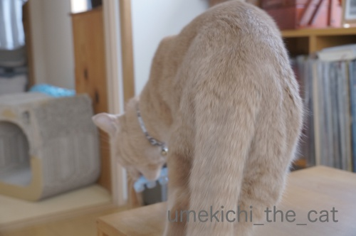
のんきに写真を撮ってたら強奪されましたよ。
噛み心地が好きなんでしょうか・・・・・
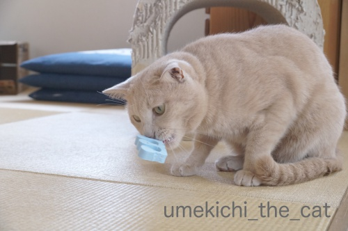
強奪してがぶ！
念願叶ってウハウハかもしれませんが同時にちょっと困ってます。
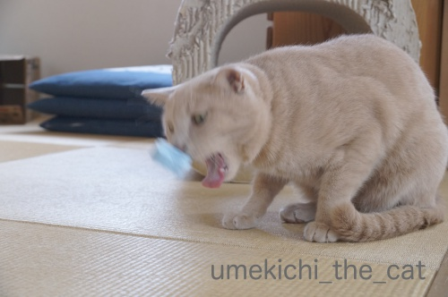
歯に刺さって取れない模様( ´艸｀)
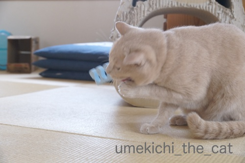
必死！！！
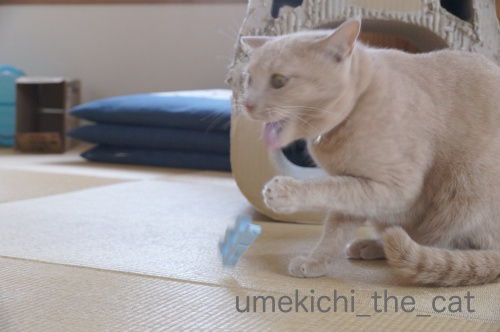
無事取れました。
おイタするからそんなことになるんですよwww
それにしてもすごい妖猫顔です (⌒_⌒;
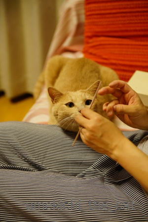
私がケアしているときは張り付いてきます。
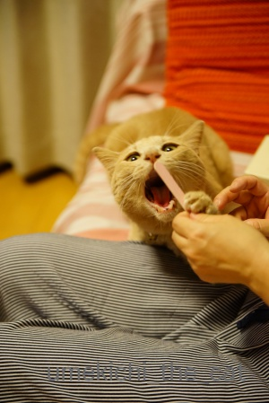
あが〜っ！
尖ったものが多いし危ないので梅吉に張り付かれるとケアが全然進みません（涙）
梅吉は幼い頃から人間の「爪」関係が大好きでした。
切った爪を食べようとした時期もあったしw
みなさんのお家のにゃんこは変なものに執着することはないでしょうか。
↑ガブッと一押し↑
私が不器用なのか家事がしにくい（ラップ類が張り付く、細かいものが摘めない等）事と
何より梅吉に怪我をさせては大変なので今は自爪、ケアは自分でしております。
（ネイルしていても動物には全く危険はないよ！という方ももちろんいらっしゃるかと＾＾
これはあくまで私個人の判断です。梅吉、やんちゃだしね・・・）
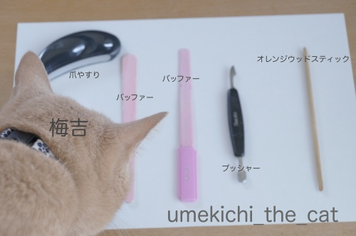
色々お道具を使ってケアしますが（これはなんじゃ？という男性は身近な女性に聞いてくださいね）
このケア道具、梅吉の大好物でもあります。
撮影していたら眠ってたのに飛び起きてやって来ました！
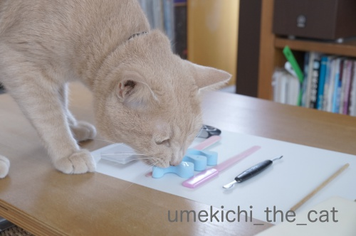
ケア用品の中でも一番執着しているのはこの青いスポンジ状のもの。
ペディキュアするときに足の指を離すために使うのですがこれが好きで好きで・・・
お気付きの方もいらっしゃるかと思いますがもう一山ないと全部の指が離れません。
足りない山はそう！梅吉に噛みちぎられましたw
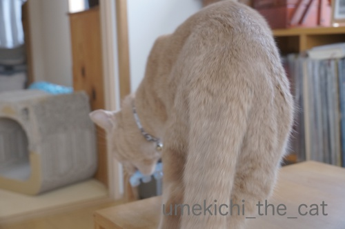
のんきに写真を撮ってたら強奪されましたよ。
噛み心地が好きなんでしょうか・・・・・
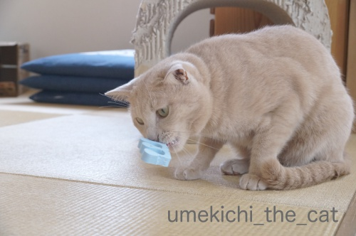
強奪してがぶ！
念願叶ってウハウハかもしれませんが同時にちょっと困ってます。
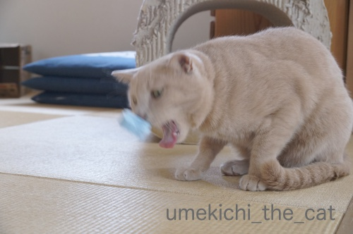
歯に刺さって取れない模様( ´艸｀)
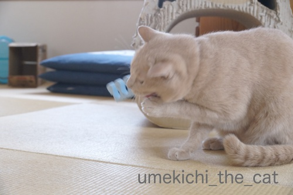
必死！！！
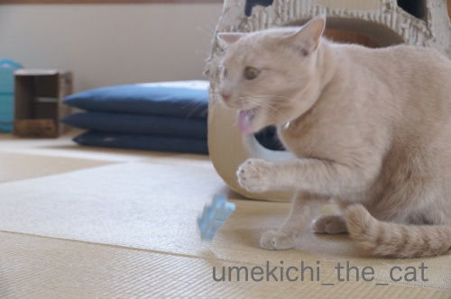
無事取れました。
おイタするからそんなことになるんですよwww
それにしてもすごい妖猫顔です (⌒_⌒;
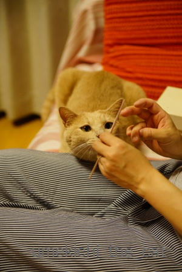
私がケアしているときは張り付いてきます。
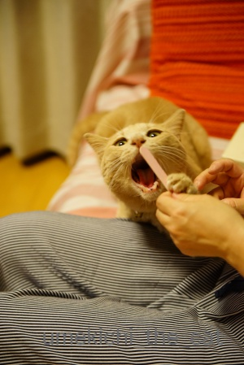
尖ったものが多いし危ないので梅吉に張り付かれるとケアが全然進みません（涙）
梅吉は幼い頃から人間の「爪」関係が大好きでした。
切った爪を食べようとした時期もあったしw
みなさんのお家のにゃんこは変なものに執着することはないでしょうか。
イニャバウワーはお出かけ前のお約束 [梅吉]
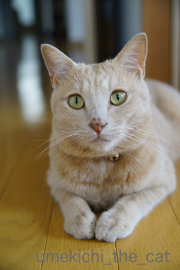
おでかけするんやな・・・・・
（ちょっとだけお鼻が「にじっ」としてまーす）
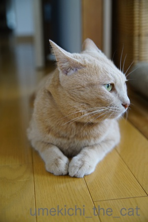
わし、さみしいわぁ・・・・・
としおらしくしてみても
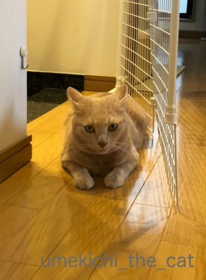
ここはぜったいに とおさへんで
と玄関前で実力行使に出ようとしても
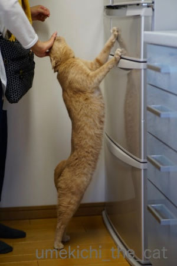
おかーさんのお出かけ直前、必ず冷蔵庫の前でイニャバウワー！！
梅吉選手、冷蔵庫から出てくるおやつを期待してのキメポーズ。
出来栄えで加点がもらえそうであります！
反り返りながら手に頭をこすりつけて来るんですよ。
私から見るとこんな感じ。
（14秒。音が出ます）
最後にぎゅいんとひと反りするのがポイントです＾＾
梅吉の幼い頃、出かける時の後追いがひどかったので
おやつを置いてその隙に出かけていたのですがそれがすっかり習慣になりました。
今では着替え始めるとわーわー催促が始まりますwww
梅吉、胴が長いな・・・
↑ガブッと一押し↑
（ちょっとだけお鼻が「にじっ」としてまーす）
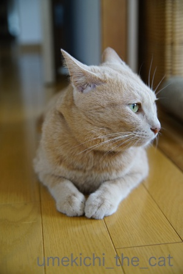
としおらしくしてみても
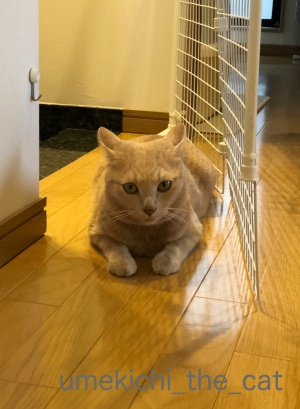
と玄関前で実力行使に出ようとしても
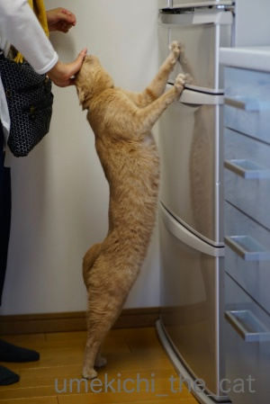
おかーさんのお出かけ直前、必ず冷蔵庫の前でイニャバウワー！！
梅吉選手、冷蔵庫から出てくるおやつを期待してのキメポーズ。
出来栄えで加点がもらえそうであります！
反り返りながら手に頭をこすりつけて来るんですよ。
私から見るとこんな感じ。
（14秒。音が出ます）
最後にぎゅいんとひと反りするのがポイントです＾＾
梅吉の幼い頃、出かける時の後追いがひどかったので
おやつを置いてその隙に出かけていたのですがそれがすっかり習慣になりました。
今では着替え始めるとわーわー催促が始まりますwww
梅吉、胴が長いな・・・
おっとの投稿活動とああ勘違い・・・ [梅吉]
梅吉さんがくんくんしている扇子は・・・
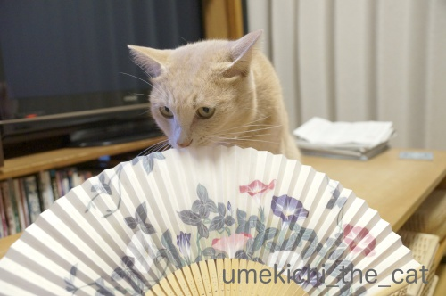

住吉大社がインスタで募集していた#わたしのすみよっさん。
おっとがポストした写真が入選！記念品として扇子と手ぬぐいをいただきました＾＾
扇子を持つとやりたくなるこの遊び！
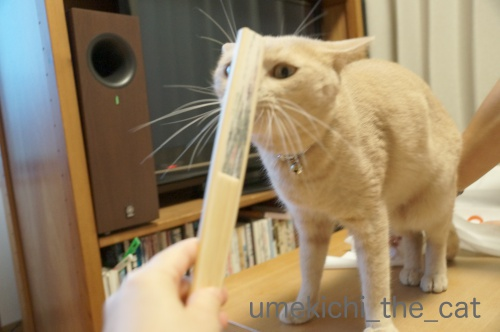
「この、うつけ者めー！」
（注：梅吉はうつけ者ではありません。）
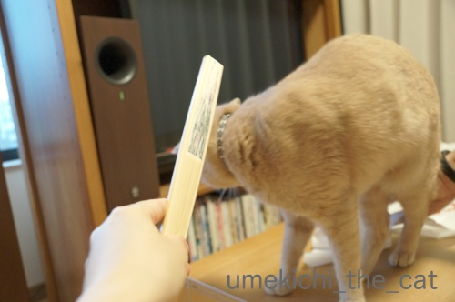
「たわけ者めー！！」
（注：梅吉はたわけ者でもありません。）
あれ？？
この遊びはお気に召さなかったんでしょうか。遊んでくれませんでした。
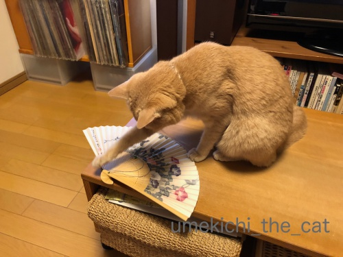
気になるのは扇の要に付いていた紐とビーズwていてい。
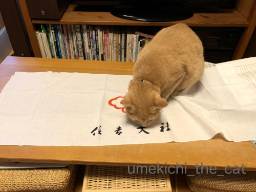
すみよっさんのご神紋の上にだって気にせず上がっちゃいます。
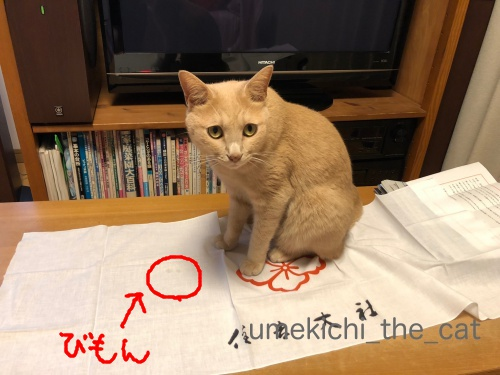
梅吉〝鼻〟紋も付けちゃいましたw
おっとの入選作を見てください。夕暮れ時のすみよっさんです。
空の色って不思議な色になりますよね。
もひとつおっとの手柄。
アイリスペットどっとコムのおそろいにゃんこフォトコンテスト2018に応募していたそうで
佳作に選ばれたんですよ。
おそろい帽子写真。頑張りました(^_－)☆
（首タオルがなんですがwww）
そしておかーさんの嬉しい勘違い。
猫父さんの撮ったこてつくんの写真がアイシアの極楽ねこカレンダー2019に採用の記事を見ていて・・・
うちは残念だったな・・・「全プレ待ちでーす」なんてコメント書いて、あれ？？？
そういえばmiawmiawのパウチに入ったフードが届いていたな。
カレンダーは12月に入ったら届きますよ、って書いてあったような・・・
ん？？？なんか変だな・・・
そう！私はすっかり別件の連絡とすっかり勘違いしてました。
なんでそんな勘違いになったんでしょうねw
この辺りのおばちゃんの思考回路の解説は長くなるので省きます。
最近は一度思い込んだら脳の修正がなかなか効かなくて。
嫌ねぇ・・・
というわけで
この写真が採用になった模様です。
既出の写真ですが夏の終わりも終わりに梅吉の麦わら帽姿をアップできて良かったです＾＾
（Ja-Kou66さん見てるー？＾＾）
極楽ねこカレンダーは何月何日に採用になったか知らせてくれないので
指がつりそうになりながらカレンダーをめくってこてつくんと梅吉を探さなくては！
↑ガブッと一押し↑
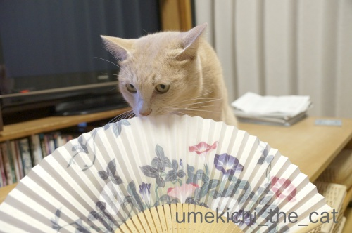
住吉大社がインスタで募集していた#わたしのすみよっさん。
おっとがポストした写真が入選！記念品として扇子と手ぬぐいをいただきました＾＾
扇子を持つとやりたくなるこの遊び！
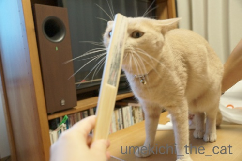
「この、うつけ者めー！」
（注：梅吉はうつけ者ではありません。）
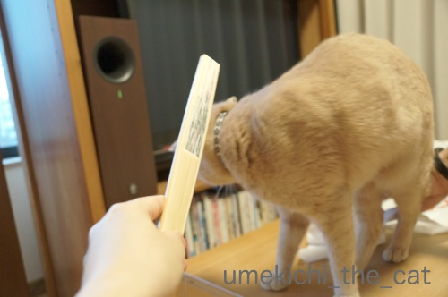
「たわけ者めー！！」
（注：梅吉はたわけ者でもありません。）
あれ？？
この遊びはお気に召さなかったんでしょうか。遊んでくれませんでした。
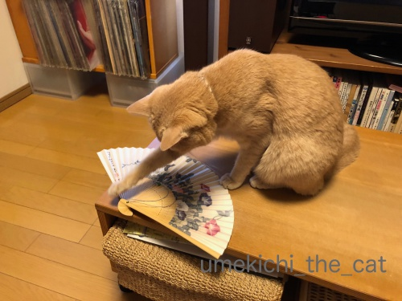
気になるのは扇の要に付いていた紐とビーズwていてい。
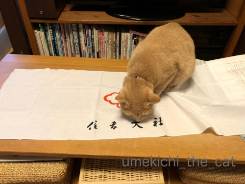
すみよっさんのご神紋の上にだって気にせず上がっちゃいます。
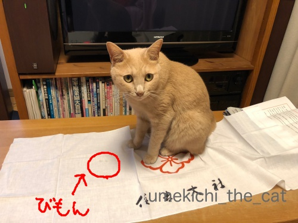
梅吉〝鼻〟紋も付けちゃいましたw
おっとの入選作を見てください。夕暮れ時のすみよっさんです。
空の色って不思議な色になりますよね。
もひとつおっとの手柄。
アイリスペットどっとコムのおそろいにゃんこフォトコンテスト2018に応募していたそうで
佳作に選ばれたんですよ。
おそろい帽子写真。頑張りました(^_－)☆
（首タオルがなんですがwww）
そしておかーさんの嬉しい勘違い。
猫父さんの撮ったこてつくんの写真がアイシアの極楽ねこカレンダー2019に採用の記事を見ていて・・・
うちは残念だったな・・・「全プレ待ちでーす」なんてコメント書いて、あれ？？？
そういえばmiawmiawのパウチに入ったフードが届いていたな。
カレンダーは12月に入ったら届きますよ、って書いてあったような・・・
ん？？？なんか変だな・・・
そう！私はすっかり別件の連絡とすっかり勘違いしてました。
なんでそんな勘違いになったんでしょうねw
この辺りのおばちゃんの思考回路の解説は長くなるので省きます。
最近は一度思い込んだら脳の修正がなかなか効かなくて。
嫌ねぇ・・・
というわけで
この写真が採用になった模様です。
既出の写真ですが夏の終わりも終わりに梅吉の麦わら帽姿をアップできて良かったです＾＾
（Ja-Kou66さん見てるー？＾＾）
極楽ねこカレンダーは何月何日に採用になったか知らせてくれないので
指がつりそうになりながらカレンダーをめくってこてつくんと梅吉を探さなくては！
梅吉パラパラとネコメンタリー [梅吉]
私が普段PCを置いて使っているテーブルの斜め上方、梅吉のお気に入りの「巣」があります。
ちょうど寝顔がよく見える角度なのでついつい写真を撮ってしまうんですよねw
毎日毎日増え続ける同じような構図の代わり映えしない写真。
かわいい＆面白い表情はたくさんあるのですが
ブログに使うにはストーリー性に乏しくてボツに。
そのボツを集めてパラパラ漫画風につなげて見みました。
写真の角度、明るさなどは揃えていないので見難いかもしれません。
お許しくださいませm(_ _)m
（1分26秒あります）
最初はタオルだけだったのがカゴになりやがてガゴの中のタオルが変わって行くところに
時の移ろいが感じられるのではないでしょうか＾＾
写真は古い順からスタートしているので梅吉の成長もわかる、かな？
（１歳過ぎた頃からスタートなのであまり大きな変化はみられないのですけど）
あの「世界ネコ歩き」にも興味を示さず（猫に関しては）見るのは自分が写っている動画だけ
の梅吉が初めてテレビに映る他のにゃんこに興味を示しました！
そのお相手は・・・・・
（20秒です）
もみじさん17才。
ぴっちぴちのセブンティーンやで、って飼い主の村山さんはおっしゃっていました＾＾
これは先日放送されたネコメンタリー 猫も、杓子もの一コマ。
余命を宣告されたもみじさんと作家の村山由佳さんの穏やかな最後の日々の映像。
もみじさんの語りとして心に残るセリフがあったので引用します。
男性は「とおちゃん」に置き換えてくださいね。
『なあ、かあちゃん、いっつもうちにきくやん？
あんた、かあちゃんとこきて幸せやった？て
うちには幸せなんてようわからん
せやけどこれだけはわかるで
かあちゃんは、この世でいちばんうちのことが好き
うちは、この世でいちばんかあちゃんのことが好き
なあ、それでええやろ？
相思相愛や・・・』
もみじさん、2018年春、永眠しています。
↑ガブッと一押し↑
ちょうど寝顔がよく見える角度なのでついつい写真を撮ってしまうんですよねw
毎日毎日増え続ける同じような構図の代わり映えしない写真。
かわいい＆面白い表情はたくさんあるのですが
ブログに使うにはストーリー性に乏しくてボツに。
そのボツを集めてパラパラ漫画風につなげて見みました。
写真の角度、明るさなどは揃えていないので見難いかもしれません。
お許しくださいませm(_ _)m
（1分26秒あります）
最初はタオルだけだったのがカゴになりやがてガゴの中のタオルが変わって行くところに
時の移ろいが感じられるのではないでしょうか＾＾
写真は古い順からスタートしているので梅吉の成長もわかる、かな？
（１歳過ぎた頃からスタートなのであまり大きな変化はみられないのですけど）
あの「世界ネコ歩き」にも興味を示さず（猫に関しては）見るのは自分が写っている動画だけ
の梅吉が初めてテレビに映る他のにゃんこに興味を示しました！
そのお相手は・・・・・
（20秒です）
もみじさん17才。
ぴっちぴちのセブンティーンやで、って飼い主の村山さんはおっしゃっていました＾＾
これは先日放送されたネコメンタリー 猫も、杓子もの一コマ。
余命を宣告されたもみじさんと作家の村山由佳さんの穏やかな最後の日々の映像。
もみじさんの語りとして心に残るセリフがあったので引用します。
男性は「とおちゃん」に置き換えてくださいね。
『なあ、かあちゃん、いっつもうちにきくやん？
あんた、かあちゃんとこきて幸せやった？て
うちには幸せなんてようわからん
せやけどこれだけはわかるで
かあちゃんは、この世でいちばんうちのことが好き
うちは、この世でいちばんかあちゃんのことが好き
なあ、それでええやろ？
相思相愛や・・・』
もみじさん、2018年春、永眠しています。

カフェオレ色の梅吉

梅吉 2023年8月10日 永眠


梅吉と出会った譲渡会

犬猫の理由なき殺処分ゼロ
妄想広告
UMEKICHI 光

爆発的に早い！
時々攻撃的！
Thanks to Mr.Boss365
爆発的に早い！
時々攻撃的！
Thanks to Mr.Boss365